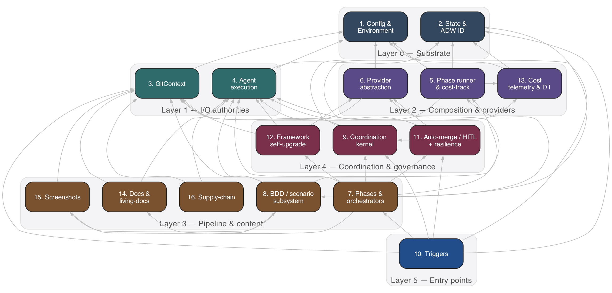
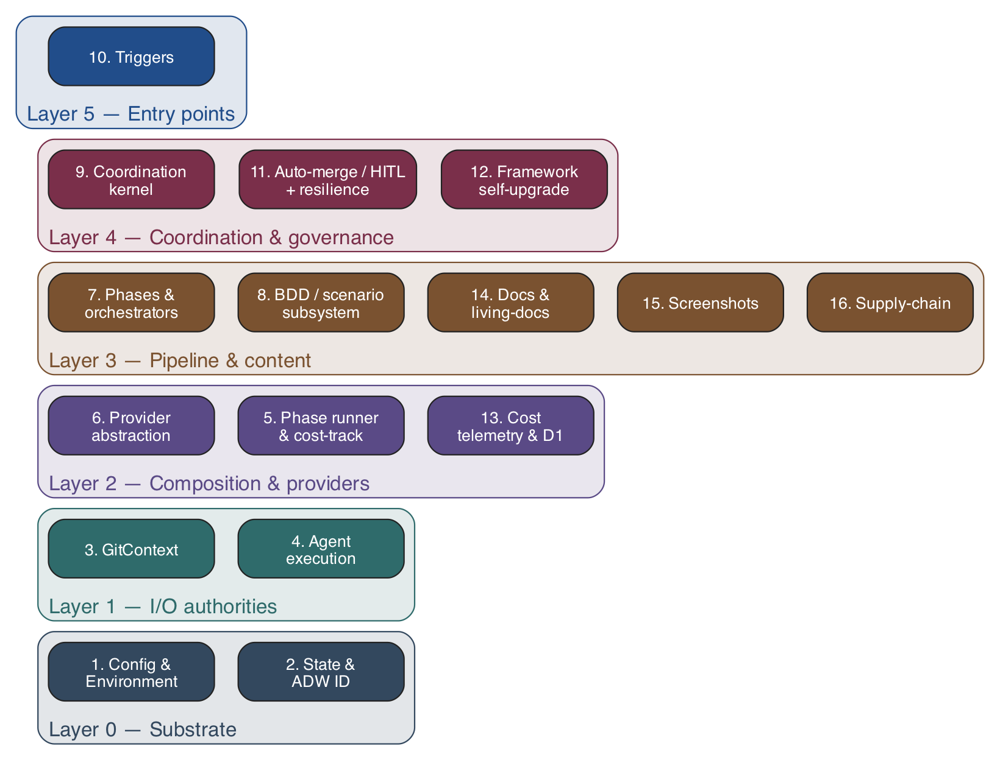
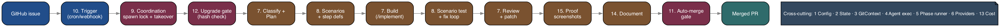

ADW Architecture — As-is Reference
A sixteen-part walkthrough of the ADW (AI Dev Workflow) system, layered from the configuration substrate at the bottom through orchestration, coordination, and operational concerns at the top. Click through in order for the narrative, or jump to any subsystem via the sidebar.
Big picture
Three cross-cutting views of the full system. Each subsystem page below drills into a slice of these diagrams.



The sixteen subsystems
Read them in order for the full narrative; each page ends with a “next” link that follows the same ordering as the sidebar.
Config & Environment
The substrate every other subsystem reads.
SUBSYSTEM 02State & ADW ID
The persistence substrate for ADW workflows.
SUBSYSTEM 03GitContext
`GitContext` is the single deep-module authority for all git and `gh` I/O in ADW.
SUBSYSTEM 04Agent execution
The single seam through which every ADW phase talks to the model.
SUBSYSTEM 05Phase runner & cost-tracking composition
The composition glue that wraps each workflow phase: it routes a slash command to a model tier and reasoning effort, applies a per-phase watchdog timeout, runs a generic retry-with-resolution loop where applicable, an…
SUBSYSTEM 06Provider abstraction
Provides a pluggable, platform-agnostic seam so ADW workflow phases never call GitHub/GitLab/Jira directly.
SUBSYSTEM 07Phases & orchestrators
The linear SDLC pipeline of ADW: the root `adws/adw*.tsx` entry-point scripts that classify a GitHub issue, route it to a workflow, and compose a sequence of phases (plan → build → test → review → document → PR).
SUBSYSTEM 08BDD / scenario subsystem
Drives BDD-driven validation across the SDLC pipeline: generating per-issue Gherkin scenarios from a GitHub issue, generating step definitions, reconciling the implementation plan against scenarios, running tag-filter…
SUBSYSTEM 09Coordination kernel
The single-host recovery / anti-split-brain layer.
SUBSYSTEM 10Triggers
The two automation entry points that turn external GitHub activity into spawned ADW orchestrator processes.
SUBSYSTEM 11Auto-merge / HITL + resilience queues
The governance + pause/resume layer.
SUBSYSTEM 12Framework self-upgrade
Keeps every registered target repo's `.adw/` configuration in sync with the ADW framework.
SUBSYSTEM 13Cost telemetry & D1
The cost engine (`adws/cost/`) computes, formats, and persists the monetary/token cost of each ADW phase.
SUBSYSTEM 14Docs & living-docs
Generates and maintains current-state module documentation under `app_docs/`.
SUBSYSTEM 15Screenshots
The review-screenshot pipeline harvests BDD scenario screenshot artifacts produced during scenario test runs, uploads them to per-repo Cloudflare R2 buckets via the S3-compatible API, and embeds the resulting public U…
SUBSYSTEM 16Supply-chain
Integrates the external `depaudit` dependency-audit gate into ADW.